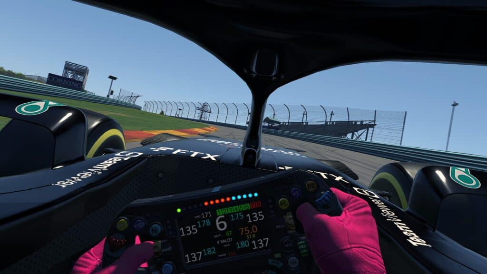
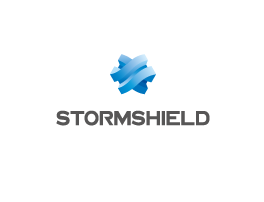
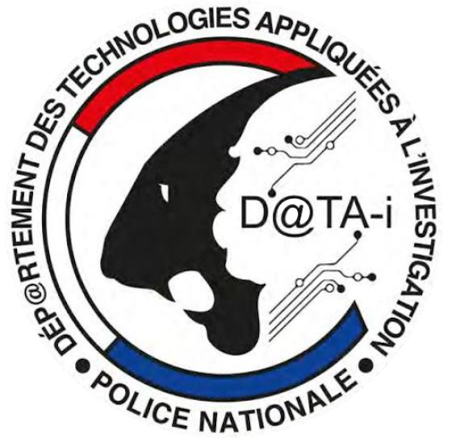
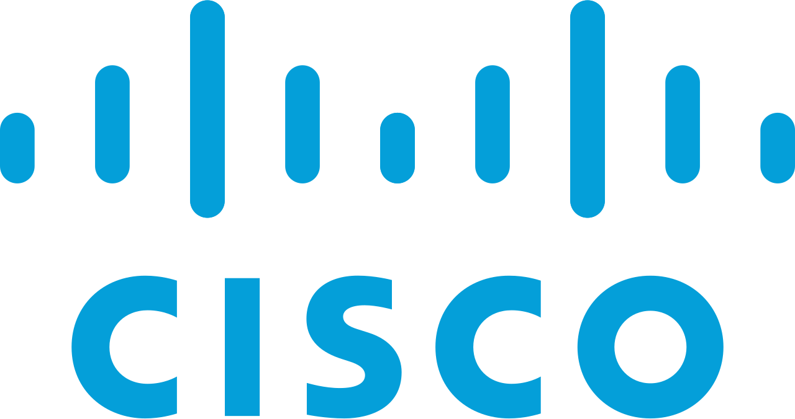

À propos de moi About Me
Je m'appelle Mattéo Canada, étudiant en troisième année de BUT Réseaux et Télécommunications, parcours cybersécurité. Passionné par l'informatique, les réseaux et les nouvelles technologies, je combine rigueur, créativité et esprit d'analyse pour mener à bien mes projets. J'accorde une importance particulière à l'innovation et à la résolution de problèmes, des valeurs que je partage avec un univers qui m'inspire au quotidien : le sport automobile, et la Formule 1 en particulier.
My name is Mattéo Canada, a third-year student in Networks and Telecommunications on the cybersecurity track. Passionate about IT, networks, and new technologies, I combine rigor, creativity, and analytical thinking to carry out my projects. I place great importance on innovation and problem-solving — values I share with a world that inspires me daily: motorsport, and Formula 1 in particular.

Compétences techniques Technical Skills
Certifications Certifications
- Certification ANSSI – SECNUMACADEMIE (Cybersécurité) ANSSI Certification – SECNUMACADEMIE (Cybersecurity)
- Obtention du CCNA 1 – Cisco Certified Network Associate lors de ma 1ère année de BUT Obtained the CCNA 1 – Cisco Certified Network Associate during my first year of BUT
- Obtention du CCNA 2 – Switching, Routing and Wireless Essentials Obtained the CCNA 2 – Switching, Routing and Wireless Essentials
- Obtention du CCNA 3 – Enterprise Networking, Security and Automation Obtained the CCNA 3 – Enterprise Networking, Security and Automation
- Obtention de la certification Stormshield CSNA – Certified Stormshield Network Administrator en 2ème année Obtained the Stormshield CSNA – Certified Stormshield Network Administrator certification in my second year
- CCNP ENCOR – Implementing and Operating Cisco Enterprise Network Core Technologies, en cours de préparation CCNP ENCOR – Implementing and Operating Cisco Enterprise Network Core Technologies, currently in preparation
- CSNE – Certified Stormshield Network Expert, en cours de préparation CSNE – Certified Stormshield Network Expert, currently in preparation

Expérience professionnelle Professional Experience
Je suis actuellement en alternance au sein du D@TA-i (Département des Technologies Appliquées à l'Investigation), rattaché à la Direction Nationale de la Police Judiciaire (DNPJ), Police Nationale — Ministère de l'Intérieur. Mon poste consiste à travailler sur les réseaux informatiques et les systèmes informatiques du service.
I'm currently on a work-study program within D@TA-i (Department of Technologies Applied to Investigation), part of the National Directorate of the Judicial Police (DNPJ), French National Police — Ministry of the Interior. My role involves working on the department's computer networks and information systems.

Expériences marquantes Significant Experiences
Dès mes 11 ans, j'ai initié un projet personnel de convertisseur de langage de programmation avec un ami, posant les bases de ma passion pour la tech. Plus récemment, j'ai dirigé un projet de ruche connectée pour un apiculteur afin de lui faire gagner en efficacité et en économie. Ce projet IoT, mêlant électronique, programmation embarquée et réseau, m'a permis d'exploiter pleinement mes compétences techniques et humaines.
Since I was 11, I started a personal project to create a programming language converter with a friend, laying the foundations of my passion for tech. More recently, I led a project to create a connected beehive for a beekeeper, helping him increase efficiency and reduce costs. This IoT project, combining electronics, embedded programming, and networking, allowed me to fully leverage my technical and interpersonal skills.
L'une de mes plus belles réussites collectives reste la finale de la Cisco EMEA Cup, disputée aux côtés de mes coéquipiers Soulim Rechidov, Oualid Okych et Nolan Ben Yahya. Nous avons décroché la 1ʳᵉ place en France, la 4ᵉ en Europe et la 5ᵉ sur toute la zone EMEA (Europe, Afrique, Moyen-Orient), une performance qui nous a valu d'être récompensés par Cisco. Au-delà du classement, cette finale a démontré la rigueur technique et l'esprit d'équipe que nous développons à l'IUT d'Aix-Marseille, et je tiens à remercier notre coach M. Nguyen ainsi que notre école pour leur soutien constant.
One of my proudest collective achievements remains the Cisco EMEA Cup final, competed alongside my teammates Soulim Rechidov, Oualid Okych and Nolan Ben Yahya. We secured 1st place in France, 4th in Europe and 5th across the entire EMEA region (Europe, Middle East and Africa), a performance that earned us recognition and rewards from Cisco. Beyond the ranking, this final showcased the technical rigour and team spirit we cultivate at the IUT of Aix-Marseille, and I want to thank our coach Mr. Nguyen and our school for their constant support.

Vision et ambitions Vision and Ambitions
Mon objectif est de devenir un professionnel complet, capable de concevoir et de sécuriser des infrastructures réseaux tout en intégrant des technologies intelligentes dans des solutions réelles. J'aime l'approche "hands-on" et je cherche constamment à approfondir mes connaissances et à repousser mes limites.
My goal is to become a well-rounded professional, capable of designing and securing network infrastructures while integrating smart technologies into real-world solutions. I love a hands-on approach and I constantly strive to deepen my knowledge and push my limits.
À plus long terme, je souhaite poursuivre mes études en école d'ingénieur afin d'acquérir le niveau d'expertise et la légitimité technique nécessaires pour évoluer vers des postes à responsabilités. Je me vois diriger une équipe, transmettre ce que j'apprends et fédérer autour de projets ambitieux — une dimension humaine que la finale Cisco m'a confirmé apprécier autant que la technique. À terme, l'idée de créer ma propre entreprise m'attire profondément : pouvoir bâtir une structure qui me ressemble, portée par mes convictions techniques et mon goût de l'autonomie, est une perspective qui guide aujourd'hui mes choix.
In the longer term, I want to continue my studies at an engineering school to gain the level of expertise and technical legitimacy needed to move toward positions of responsibility. I see myself leading a team, passing on what I learn and rallying people around ambitious projects — a human dimension that the Cisco final confirmed I value as much as the technical side. Eventually, the idea of starting my own company deeply appeals to me: building a structure that reflects who I am, driven by my technical convictions and my taste for independence, is a prospect that already shapes my choices today.
Au-delà de la technique Beyond the Technical Side
Je crois que ce que l'on fait en dehors du clavier façonne autant l'ingénieur que les compétences techniques. En ce moment, je consacre du temps à l'apprentissage de plusieurs langues — l'espagnol, l'italien et le japonais — par curiosité pour les cultures qu'elles portent autant que pour le plaisir de garder mon esprit en mouvement. Apprendre une langue, c'est un peu comme apprendre un nouveau paradigme de programmation : il faut accepter de se tromper, répéter, et reconstruire sa logique pas à pas.
I believe that what you do away from the keyboard shapes the engineer just as much as technical skills do. Right now, I'm dedicating time to learning several languages — Spanish, Italian and Japanese — out of curiosity for the cultures behind them as much as for the pleasure of keeping my mind active. Learning a language feels a lot like learning a new programming paradigm: you have to accept making mistakes, repeat, and rebuild your logic step by step.
Cette curiosité ne s'arrête pas à la technique. Je m'intéresse aussi à des domaines exigeants comme la psychologie, la finance et l'immobilier. La psychologie m'aide à mieux comprendre les autres et moi-même, ce qui est précieux dans le travail d'équipe et le management ; la finance et l'immobilier nourrissent mon envie d'autonomie et ma vision entrepreneuriale, en me poussant à raisonner sur le long terme et la création de valeur. J'aime explorer des sujets qui sortent de ma zone de confort, convaincu qu'une bonne décision technique se prend rarement en vase clos.
This curiosity doesn't stop at technology. I'm also drawn to demanding fields such as psychology, finance and real estate. Psychology helps me better understand others and myself, which is invaluable in teamwork and management; finance and real estate feed my desire for independence and my entrepreneurial outlook, pushing me to think in terms of the long run and value creation. I enjoy exploring topics outside my comfort zone, convinced that a sound technical decision is rarely made in a vacuum.
Je suis aussi passionné de sport automobile. Je pratique le sim racing sur iRacing, aussi bien en GT3 qu'en monoplace, une discipline qui m'a appris la rigueur, la régularité et la gestion du stress : en course, la moindre erreur se paie immédiatement, et la performance vient de la constance plus que de l'exploit isolé. C'est une école de précision et de sang-froid qui se retrouve, étonnamment, dans le débogage et l'optimisation logicielle. Plus largement, j'aime le sport sous toutes ses formes, le football en particulier, pour l'esprit d'équipe et la combativité qu'il demande.
I'm also passionate about motorsport. I practice sim racing on iRacing, both in GT3 and open-wheel cars — a discipline that taught me rigour, consistency and stress management: in a race, the slightest mistake is paid for instantly, and performance comes from steadiness rather than isolated heroics. It's a school of precision and composure that, surprisingly, carries over into debugging and software optimisation. More broadly, I love sport in all its forms, football especially, for the team spirit and competitiveness it demands.
Enfin, j'ai des convictions assez tranchées sur la manière dont on construit et partage la technologie. Je suis profondément attaché à la philosophie de l'open source : la transparence du code, la liberté de comprendre, de modifier et de contribuer me semblent essentielles, et c'est aussi ce que j'ai pu vivre concrètement en stage à travers les dépôts collaboratifs. À l'inverse, je me reconnais peu dans le modèle fermé et l'écosystème imposé par Windows ; je travaille au quotidien sous Linux, où je me sens libre de maîtriser ma machine de bout en bout. Je reste néanmoins pragmatique : une conviction n'a de valeur que si l'on sait la confronter à d'autres points de vue, et c'est dans ces échanges que je progresse le plus.
Finally, I hold fairly strong views on how technology should be built and shared. I'm deeply attached to the open-source philosophy: code transparency and the freedom to understand, modify and contribute feel essential to me — something I experienced first-hand during my internship through collaborative repositories. Conversely, I don't identify much with the closed model and the ecosystem imposed by Windows; I work daily on Linux, where I feel free to master my machine from end to end. That said, I stay pragmatic: a conviction is only worth as much as your ability to confront it with other viewpoints, and it's through those exchanges that I grow the most.